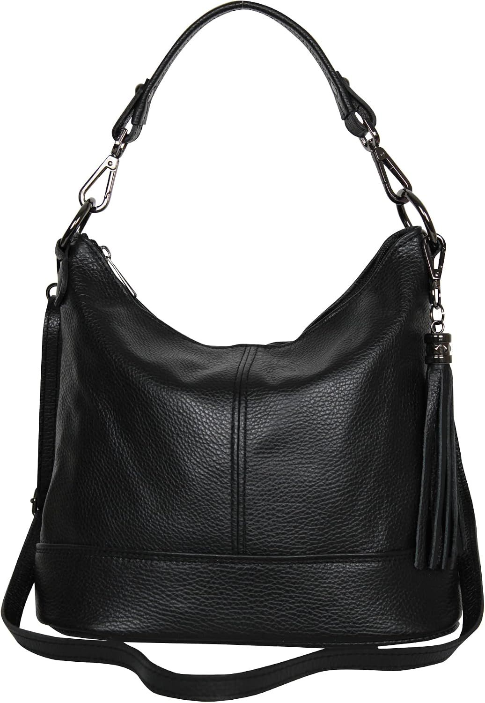

AmbraModa GLX09 - Bolso de mano de mujer
AmbraModa GLX09 - Bolso de mano de mujer, bandolera, bolso de hombro de cuero auténtico, Negro , 28/24/13cm

AmbraModa GLX09 - Bolso de mano de mujer, bandolera, bolso de hombro de cuero auténtico, Negro , 28/24/13cm
AmbraModa · ASIN B09QYZ528H
58,81
Lo que destacan las compradoras
- Estética
- Calidad
- Capacidad
Lo que critican
- Olor inicial
- Tamaño
Con una nota media de 4,2 sobre 5 en 435 valoraciones — una base de compra sólida — no es un bolso para comprar a ciegas: es para comprar convencido.
Ver precio en Amazon ↗Aparece en el diario los días: 33, 71, 109, 147, 185, 223, 261, 299, 337. Nota media 4,2★ sobre 435 valoraciones reales.